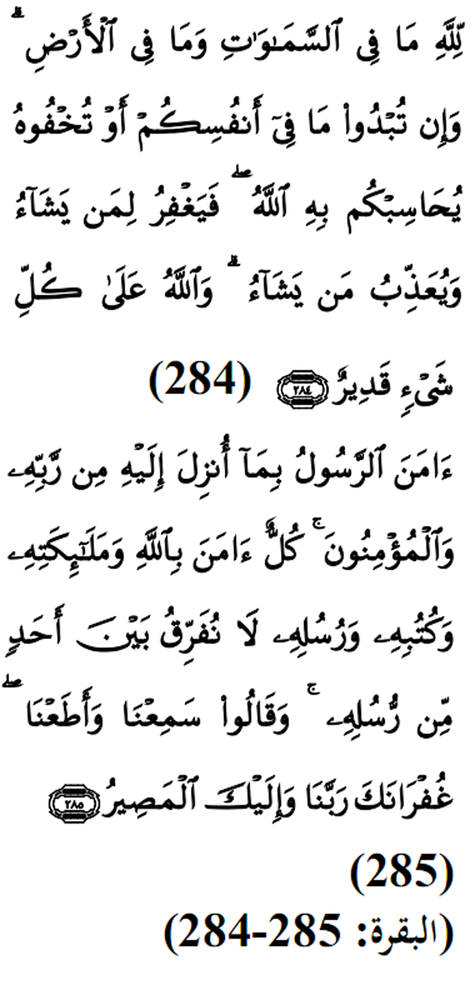

|

Terjemahan (284) Kepunyaan Allah segala apa yang ada di langit dan di bumi. Dan jika kamu melahirkan apa yang di dalam hatimu atau kamu menyembunyikannya, nescaya Allah (SWT) akan membuat perhitungan dengan kamu tentang perbuatan kamu itu. Maka, Allah mengampuni siapa yang dikehendaki-Nya dan menyiksa siapa yang dikehendaki-Nya. Dan Allah Maha Kuasa atas segala sesuatu (285) Rasul telah beriman kepada Al-Quran yang diturunkan kepadanya dari Tuhannya, demikian pula orang-orang yang beriman. Semuanya beriman kepada Allah, Malaikat-malaikatNya, kitab-kitabNya, dan Rasul-rasulNya.( Mereka mengatakan): " Kami tidak membezakan antara seseorang pun (dengan yang lain) dari Rasul-rasulNya", dan mereka mengatakan : " Kami dengar dan kami taat", (Mereka berdoa): " Ampunilah kami ya Tuhan kami dan kepda Engkaulah tempat kami kembali. Fadhilat Wirid Dalam hadith yang lain yang diriwayatkan oleh Ibn Mas'ud (RA), Rasulullah (SAW) bersabda: "... sesiapa yang membaca sepuluh ayat ini: Empat di awal surah Al-Baqarah, ayat Kursi, dan dua ayat berikutnya dan akhir surah Al - Baqarah, maka rumahnya akan selamat daripada dimasuki syaitan hingga ke pagi hari." |